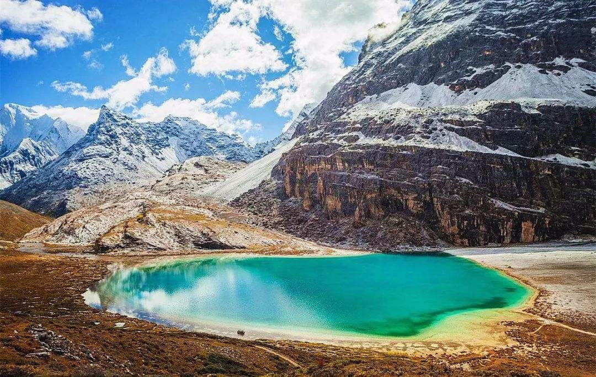
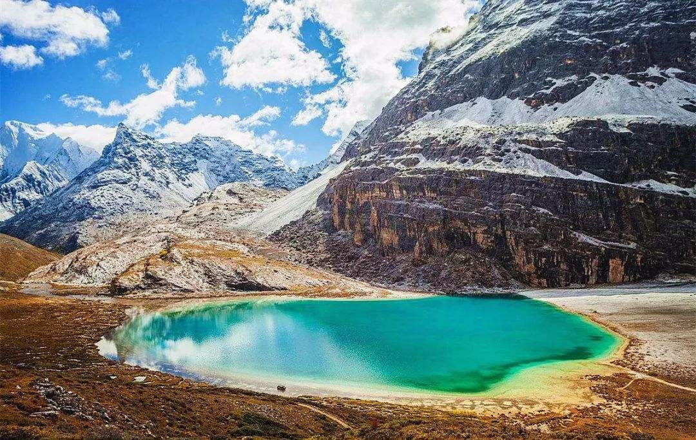
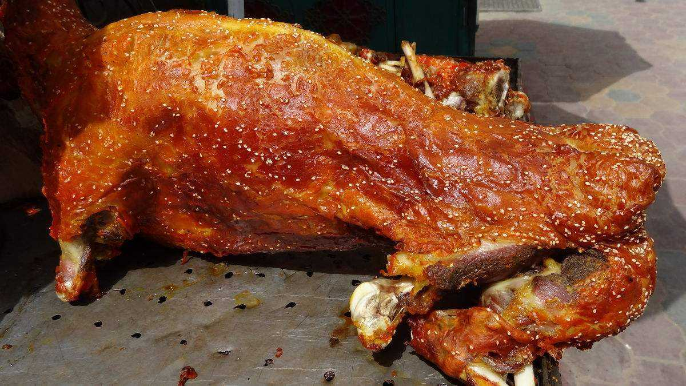

火烧蕨麻猪
是当地的一道著名的美食，主要食材就是当地养殖
的蕨麻猪烹制而成的，火烧蕨麻猪的特点就是皮酥肉嫩，味道鲜美.
清蒸巴河鱼
巴河鱼主要生产鱼水质清冽的巴松措和尼洋河，鱼的肉质鲜美细
嫩，口感好的不得了，还具有一定的美容养颜的功效，是去了西藏必吃的美食！
 酥油茶
酥油茶
酥油茶是西藏当地的一种特色饮料，它是由酥油和浓茶烹
制而成的，它的味道香浓，与藏族相邻的一些民族也有饮用酥油茶的习惯，藏族的人们特别的嗜爱酥油
茶，而且这个酥油茶还有一个美丽的传说，具体的传说是什么还是要你自己去西藏探寻了
牦牛肉
由一种生长在无任何污染的高寒之地的牦牛制成的牛肉，它的味道极其的鲜美，
肉质也非常的细嫩，含有丰富的蛋白质和氨基酸，经常食用还能增加人的抵抗力